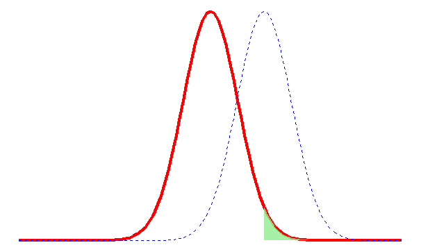

| Realidad |
Decisión del investigador
|
|
|---|---|---|
| \[\text{No rechazar} \; H_0\] | \[\text{Rechazar} \; H_0\] | |
| \[H_0 \; \text{verdadera}\] | Decisión correcta | Error Tipo I |
| \[H_0 \; falsa\] | Error Tipo II | Decisión correcta |
6 Estadística Inferencial
En la Sección 2.3 se habló de los típos de estadística, la estadística inferencial consiste de los métodos por medio de los cuales se puede hacer inferencias o generalizaciones sobre una población. En la Figura 6.1 se ilustra la relación entre la estadística descriptiva y la inferencial. La inferencia estadística se puede dívidir en dos grandes áreas: estimación y pruebas de hipótesis.

Imaginemos que se desea estimar el promedio de producción diaria de una raza lechera en el trópico húmedo, para esto hay que tomar en cuenta que no se tiene acceso a todas las vacas de la raza de interés en el trópico húmedo y resulta díficil estimar el valor exacto del promedio. Por esta razón, proporcionar un intervalo en el que posiblemente se encuentre el valor que deseamos estimar tendría menor riesgo.
Supongamos que usted como investigador quiere probar que el promedio de la producción diaria de cierta raza es mayor en una región con temperaturas menores a las del trópico húmedo. Una primera aproximación para resolver este problema es realizar una gráfica que nos muestre la producción promedio de la raza para cada región. Sin embargo, un gráfico no es la forma adecuada para contestar una pregunta de este tipo.
Los dos problemas citados serán abordados y resueltos en este capítulo. El primero en la Sección 6.1 y el segundo en la Sección 6.2.
6.1 Intervalos de Confianza
Un estimador puntual de un parámetro \(\theta\) es un número \(\bar{\theta}\) de un estadístico \(\Theta\) que puede ser considerado un valor que se aproxima a \(\theta\). Por ejemplo \(\bar{x}\) del estadístico \(\bar{X}\), calculado de una muestra de tamaño \(n\) es un estimador puntual del parámetro poblacional \(\mu\). Debido a que un estimador puntual es un simple número, no da información por si solo sobre la precisión y la confiabilidad de la estimación.
En cualquier estimación de un parámetro habrá un error asociado, por ejemplo \(\bar{X}\) no debe estimar \(\mu\) con exactitud, pero se espera que no esté muy lejos del valor real. Lo que se espera de un estimador es que sea insesgado y eficiente.
La forma de un intervalo de confianza es:
\[ \text{Estimador puntual} \pm \text{Margen de Error} \tag{6.1}\]
El estimador es el valor calculado a partir de la muestra para el parámetro desconocido. El margen de error es cuán preciso es nuestro cálculo, basados en la variabilidad del estimador, y de la confianza que tengamos en que el procedimiento detectará el valor real del parámetro de la población.
6.1.1 Interpretación de un intervalo de confianza
Un intervalo de confianza del \(C \%\) indica que si construimos muchos de esos intervalos, entonces el \(C \%\) de las veces el intervalo contendrá el valor real del parámetro.
Por ejemplo en la Figura 6.2 se muestran 100 intervalos construidos con el \(95 \%\) de confianza para el promedio poblacional, para construir cada intervalo se tomaron muestras de 100 elementos. Los intervalos de color celeste son los que contienen el valor real del parámetro, los intervalos de color rojo son los que no contienen el valor real del parámetro. El lector puede verificar que \(5\) intervalos o el \(5 \%\) no contiene el valor real del parámetro lo que implica que el \(95 \%\) de los intervalos sí contiene el valor real del parámetro.

6.1.2 Intervalo de Confianza para la media \(\mu\)
Para construir un intervalo de confianza para \(\mu\) existen dos casos, el primero es cuando se conoce la desviación poblacional \(\sigma\) y el segundo cuando no se conoce la desviación poblacional \(\sigma\).
El primer caso es hipotético y puede ser considerado un caso para ejemplificar el concepto de intervalo de confianza, en la Sección 6.1.2.1 se explica en detalle por qué consideramos este un caso hipotético.
Para el primer caso usamos la distribución normal y para el segundo debemos usar la distribución \(t\) de Student como lo veremos en la sección Sección 6.1.2.2.
6.1.2.1 Intervalo de confianza para \(\mu\) cuando se conoce \(\sigma\)
Si \(\bar{x}\) es la media de una muestra aleatoria de tamaño \(n\) de una población con desviación conocida \(\sigma\), un intervalo con \(100\left(1-\alpha\right)\%\) para la media \(\mu\) está dado por:
\[ \left(\bar{x} - Z_{\frac{\alpha}{2}}\dfrac{\sigma}{\sqrt{n}}, \bar{x} + Z_{\frac{\alpha}{2}}\dfrac{\sigma}{\sqrt{n}} \right) \tag{6.2}\]
Donde \(Z_{\frac{\alpha}{2}}\) es el valor correspondiente a una probabilidad de cola superior de \(\frac{\alpha}{2}\) de la distribución normal estándar. El valor de \(Z_{\frac{\alpha}{2}}\) que se usa para construir un intervalo de confianza recibe el nombre de valor crítico.
Este caso es hipotético porque para utilizar la Ecuación 6.2 es necesario conocer el valor de \(\sigma\). Pero conocer \(\sigma\) implica conocer todos los valores de la población. Y si se conocen todos los valores de la población se puede calcular el valor de la media poblacional que es lo que nos interesa estimar.
En situaciones reales nunca se conoce la desviación estándar de la población y además las poblaciones son muy grandes lo que imposibilita poder examinar todos los valores. En la siguiente sección aprenderemos a abordar esta situación.
6.1.2.2 Intervalo de confianza para \(\mu\) cuando no se conoce \(\sigma\)
Si \(\bar{x}\) es la media de una muestra aleatoria de tamaño \(n\) con desviación muestral \(s\), un intervalo con \(100\left(1-\alpha\right)\%\) para la media \(\mu\) está dado por:
\[ \left(\bar{x} - t_{\frac{\alpha}{2}}\dfrac{s}{\sqrt{n}}, \bar{x} + t_{\frac{\alpha}{2}}\dfrac{s}{\sqrt{n}} \right) \tag{6.3}\]
donde \(t_{\dfrac{\alpha}{2}}\) es el valor crítico correspondiente a una probabilidad de cola superior de \(\dfrac{\alpha}{2}\) de la distribución \(t\) con \(n-1\) grados de libertad.
6.1.3 Intervalo de Confianza para la proporción
Los dos intervalos de confianza vistos en las secciones anteriores son usados para variables cuantitativas, también se puede crear intervalos de confianza para variables categóricas. Por ejemplo, es posible que queramos estimar la proporción de elementos en una población que poseen cierta propiedad de interés.
El parámetro de la proporción poblacional lo representamos con la letra griega \(\pi\). El estimador puntual para \(\pi\) es la proporción muestral \(p=\frac{X}{n}\), donde \(n\) es el tamaño muestral y \(X\) es el número de elementos de la muestra que poseen la catacterística que interesa.
\[ \left(p - Z_{\frac{\alpha}{2}}\sqrt{\dfrac{p\left(1-p\right)}{n}}, p + Z_{\frac{\alpha}{2}}\sqrt{\dfrac{p\left(1-p\right)}{n}} \right) \tag{6.4}\]
Donde
\(p=\text{proporción muestral}=\dfrac{X}{n} =\dfrac{\text{Número de elementos con la característica}}{\text{Tamaño muestral}}\)
\(n= \text{ tamaño muestral}\)
6.1.4 Intervalo de Confianza para la diferencia de medias
Si tenemos dos poblaciones con media \(\mu_1\) y \(\mu_2\) y desviaciones \(\sigma_1\) y \(\sigma_2\) respectivamente un estimador puntual de la diferencia entre \(\mu_1\) y \(\mu_2\) viene dado por el estadístico \(\bar{X_1}-\bar{X_2}\). Para obtener un estimador puntual de \(\mu_1-\mu_2\) debemos escoger dos muestras independientes, una muestra de cada población, de tamaños \(n_1\) y \(n_2\).
De acuerdo al teorema del límite central \(\bar{X_1}-\bar{X_2}\) debe estar distribuida normalmente con media \(\mu_1 - \mu_2\) y desviación \(\sqrt{\dfrac{\sigma_1^2}{n_1} + \dfrac{\sigma_2^2}{n_2}}\).
6.1.4.1 Desviaciones conocidas
Si \(\bar{x_1}\) y \(\bar{x_2}\) son medias de muestras aleatorias independientes de tamaños \(n_1\) y \(n_2\) de poblaciones con desviaciones conocidas \(\sigma_1\) y \(\sigma_2\), respectivamente, un intervalo de confianza al \(100\left(1-\alpha\right)\%\) para \(\mu_1-\mu_2\) está dado por:
\[ \left( \left( \bar{x}_1 - \bar{x}_2 \right) - z_{\frac{\alpha}{2}}\sqrt{\dfrac{\sigma_1^2}{n_1} + \dfrac{\sigma_2^2}{n_2}} , \left( \bar{x}_1 - \bar{x}_2 \right) + z_{\frac{\alpha}{2}}\sqrt{\dfrac{\sigma_1^2}{n_1} + \dfrac{\sigma_2^2}{n_2}} \right) \tag{6.5}\]
6.1.4.2 Desviaciones desconocidas e iguales
Si \(\bar{x}_1\) y \(\bar{x}_2\) son las medias de muestras aleatorias independientes, de tamaños muestrales \(n_1\) y \(n_2\) respectivamente, de poblaciones aproximadamente normales con desviaciones desconocidas pero iguales un intervalo de confianza del \(100\left(1-\alpha \right)\%\) para \(\mu_1 - \mu_2\) está dado por
\[ \left( \left( \bar{x}_1 - \bar{x}_2 \right) - t_{\frac{\alpha}{2}}s_p\sqrt{\dfrac{1}{n_1} + \dfrac{1}{n_2}} , \left( \bar{x}_1 - \bar{x}_2 \right) + t_{\frac{\alpha}{2}}s_p\sqrt{\dfrac{1}{n_1} + \dfrac{1}{n_2}} \right) \tag{6.6}\]
donde \(s_p\) es el estimador de la desviación conjunta y se calcula a partir de la Ecuación 6.7 y \(t_{\frac{\alpha}{2}}\) es el valor \(t\) con \(v=n_1+n_2-2\) grados de libertad, con una probabilidad de \(\frac{\alpha}{2}\). dejando un área de \(\frac{\alpha}{2}\) a la derecha.
\[ s_p^2 = \dfrac{\left(n_1 - 1 \right)s_1^2+\left(n_2 - 1 \right)s_2^2}{n_1 +n_2 -2} \tag{6.7}\]
6.1.4.3 Desviaciones desconocidas y diferentes
Si \(\bar{x}_1\), \(s_1\), \(\bar{x}_2\) y \(s_2\) son las medias y desviaciones de muestras aleatorias independientes de tamaños muestrales \(n_1\) y \(n_2\), respectivamente de poblaciones aproximadamente normales con varianzas desconocidas y diferentes un intervalo de confianza del \(100\left(1-\alpha \right)\%\) para \(\mu_1 - \mu_2\) está dado por:
\[ \left( \left( \bar{x}_1 - \bar{x}_2 \right) - t_{\frac{\alpha}{2}}\sqrt{\dfrac{s_1^2}{n_1} + \dfrac{s_2^2}{n_2}} , \left( \bar{x}_1 - \bar{x}_2 \right) + t_{\frac{\alpha}{2}}\sqrt{\dfrac{s_1^2}{n_1} + \dfrac{s_2^2}{n_2}} \right) \tag{6.8}\]
donde \(t_{\frac{\alpha}{2}}\) es el valor \(t\) con
\[ v = \left\lfloor\dfrac{\left(\dfrac{s_1^2}{n_1} + \dfrac{s_2^2}{n_2} \right)^2}{\dfrac{\left( \dfrac{s_1^2}{n_1} \right)^2}{n_1-1}+\dfrac{\left( \dfrac{s_2^2}{n_2} \right)^2}{n_2-1}}\right\rfloor \tag{6.9}\]
grados de libertad, con un área de \(\frac{\alpha}{2}\) a la derecha.
6.1.5 Intervalo de Confianza para la diferencia de proporciones
Si \(p_1\) y \(p_2\) son las proporciones de éxitos en muestras aleatorias de tamaño \(n_1\) y \(n_2\), respectivamente, \(q_1 = 1- p_1\), y \(q_2 = 1- p_2\) un intervalo de confianza del \(100\left(1- \alpha \right)\%\) para la diferencia de dos proporciones poblacionales \(\pi_1-\pi_2\), está dado por
\[ \left( \left( p_1 - p_2 \right) - z_{\frac{\alpha}{2}}\sqrt{\dfrac{p_1q_1}{n_1} + \dfrac{p_2q_2}{n_2}} , \left( p_1 - p_2 \right) + z_{\frac{\alpha}{2}}\sqrt{\dfrac{p_1q_1}{n_1} + \dfrac{p_2q_2}{n_2}} \right) \tag{6.10}\]
6.2 Pruebas de hipótesis
Los intervalos de confianza pueden ayudar a contestar preguntas tales como “¿es razonable concluir que la media de la producción en climas fríos es mayor que en climas tropicales?” y podríamos verificar si el valor en cuestión está dentro del intervalo de confianza, de ser así podríamos contestar afirmativamente a la pregunta.
Este procedimiento que acabamos de enunciar tiene mucho sentido pero puede resultar “muy débil” para contestar la pregunta. Preguntas como la mencionada anteriormente se pueden contestar usando pruebas de hipótesis.
Importante
- Una hipótesis, en términos estadísticos, es una suposición o afirmación sobre un parámetro de la población.
- Una prueba de hipótesis es un procedimiento basado en evidencia de la muestra y la teoría de la probabilidad para determinar si la hipótesis es una afirmación razonable.
Toda prueba de hipótesis parte de un enunciado que se asume verdadero hasta probar lo contrario, esta hipótesis que se asume cierta es conocida como hipótesis nula. El nombre de nula proviene de la esperanza de que no exista diferencia significativa entre los grupos de prueba. La hipótesis alternativa es lo opuesto a la hipótesis nula. La hipótesis alternativa en la mayoría de los casos se condidera como una hipótesis de investigación.
La hipótesis nula se denota con \(H_0\) y la alternativa con \(H_1\) aunque algunos autores utilizan la notación \(H_a\). Al final de una prueba de hipótesis se decide si se rechaza o no se rechaza la hipótesis nula, pero debemos tener claro que el procedimiento para probar hipótesis incluye la probabilidad de una conclusión incorrecta. El investigador debe comprender que el rechazo de una hipótesis implica que la evidencia proporcionada por la muestra es la que nos lleva a rechazar la hipótesis, dicho de otra forma rechazar una hipótesis significa que existe una pequeña probabilidad de obtener la información muestral observada cuando, en realidad la hipótesis es verdadera.
Existen dos tipos de errores posibles en un procedimiento de prueba de hipótesis: rechazar la hipótesis nula cuando esta es verdadera y no rechazarla cuando esta es falsa, en la Tabla 6.1 se resume la relación entre las decisiones y los errores.
Tip
- El error de tipo I también se conoce como falso positivo.
- El error de tipo II como falso negativo.
- La probabilidad de cometer un error de tipo I se denota con \(\alpha\). \[P\left(Error \; Tipo \; I\right)= \alpha\]
- La probabilidad de cometer un error de tipo II se denota con \(\beta\). \[P\left(Error \; Tipo \; II\right)= \beta\]
Existen algunas propiedades importantes que se deben conocer sobre los errores de tipo I y tipo II.
Tip
- Los errores de tipo I y de tipo II están relacionados. Si la probabilidad de uno aumenta la probabilidad del otro disminuye.
- La probabilidad de cometer un error de tipo I se puede reducir ajustando el o los valores críticos.
- Un incremento del tamaño muestral \(n\), reducirá \(\alpha\) y \(\beta\).
- Si la hipótesis nula es falsa, \(\beta\) tiene un máximo cuando el verdadero valor de un parámetro se aproxima al valor hipotético. A mayor distancia entre el verdadero valor y el hipotético, el valor de \(\beta\) sera menor.
Si se establece una buena regla de decisión, tendríamos una alta oportunidad de tomar una decisión correcta. Desafortunadamente no es posible eliminar completamente la posibilidad de errores, pues como se dijo anteriormente reducir la probabilidad de cometer el error de un tipo implica aumentar el error de otro tipo.
Retomemos la pregunta planteada al inicio de esta sección, tomemos como hipótesis nula que la media es igual a \(20\) litros y como alternativa que la media es diferente de \(20\) litros, por el momento no entraremos en detalles de como escoger las hipótesis:
\[ \begin{cases} H_0: \mu = 20 \\ H_1: \mu \neq 20 \end{cases} \]

Una regla de decisión podría ser escoger un punto o puntos límites en el eje \(x\) como en la Figura 6.3. La gráfica de color rojo representa \(H_0\) y las de color celeste representan \(H_1\). En este caso escogemos dos puntos límites porque si la media muestral se encuentra a la izquierda o a la derecha de estos límites, se rechaza \(H_0\).
En cualquiera de los dos casos la media muestral está demasiado lejos de \(H_0\) para ser creíble. Si la media muestral \(\bar{x}\) está entre los valores límite se acepta \(H_0\). La región entre los puntos límite es la región de no rechazo y hacía la izquierda o derecha de los puntos límite se encuentra la región de rechazo.
Partiendo de lo anterior, en la Figura 6.3 se pueden ver los errores de tipo I y II. El área de color verde bajo la distribución de \(H_0\) muestra la probabilidad de rechazar \(H_0\) cuando en realidad es verdadera, es decir un error de tipo I. El área de color celeste bajo la distribución de \(H_1\) muestra la probabilidad de no rechazar \(H_0\) cuando en realidad es falsa. En una prueba de hipótesis el investigador decide la probabilidad \(\alpha\) de un error de tipo I, este valor de \(\alpha\) es conocido como la significancia.
Los puntos lìmites son conocidos como valores críticos. Un procedimiento muy usado en pruebas de hipótesis es calcular el valor \(z\) de la media muestral, conocido como estadìstico de prueba y luego comparar el valor crìtico con este estadístico de prueba. Podrìamos resumir el procedimiento de prueba de hipótesis en 5 pasos:
- Determinar las hipótesis nula y alternativa.
- Escoger la significancia, generalmente se escoge el \(5\%\) o \(0.05\).
- Determinar el estadístico de prueba
- Calcular el valor crítico y establecer la regla de decisión
- Tomar la decisión.
Una forma sencilla de entender cómo establecer la regla de decisión es ver la hipótesis alternativa. La hipótesis alternativa puede tener los símbolos \(<\), \(>\) o \(\neq\). La región de rechazo de cada una se sombrea de color verde en las Figura 6.4, Figura 6.5 y Figura 6.6 respectivamente, al igual que en la Figura 6.3 la distribución de rojo corresponde a \(H_0\) y la de azul a \(H_1\).
Las Figura 6.4 y Figura 6.5 corresponden a pruebas de hipótesis de una cola y la Figura 6.6 corresponde a una prueba de hipótesis de dos colas
La Figura 6.4 muestra la región de no rechazo y de rechazo de la hipótesis nula cuando la hipótesis alternativa \(H_1\) o \(H_a\) contiene el símbolo \(<\). Por ejemplo si la hipótesis alternativa es “la media es menor a 20”, la hipótesis nula es “la media es mayor o igual a 20”.
\[ \begin{cases} H_0: \mu \geq 20 \\ H_1: \mu < 20 \end{cases} \]

La Figura 6.5 muestra la región de no rechazo y de rechazo de la hipótesis nula cuando la hipótesis alternativa \(H_1\) o \(H_a\) contiene el símbolo \(>\). Por ejemplo si la hipótesis alternativa es “la media es mayor a 20”, la hipótesis nula es “la media es menor o igual a 20”.
\[ \begin{cases} H_0: \mu \leq 20 \\ H_1: \mu > 20 \end{cases} \]

La Figura 6.6 muestra la región de no rechazo y de rechazo de la hipótesis nula cuando la hipótesis alternativa \(H_1\) o \(H_a\) contiene el símbolo \(\neq\). Por ejemplo si la hipótesis alternativa es “la media es diferente a 20”, la hipótesis nula es “la media es igual a 20”.
\[ \begin{cases} H_0: \mu = 20 \\ H_1: \mu \neq 20 \end{cases} \]

6.2.1 Significancia, efecto del tamaño y potencia de la prueba
Los investigadores generalmente buscan resultados “significativos”, es común encontrar en los artículos académicos, investigaciones y reportes expresiones como “los resultados son significativos”, “el coeficiente es significativamente diferente de cero”. Es importante entender que la palabra “significativo” se usa en términos estadisticos y no en el sentido de importante o relevante. Por lo que en el análisis de datos, algo puede ser estadísticamente significativo pero no relevante.
Supongamos que en el ejemplo desarrollado en la sección anterior tenemos una media muestral de 19.6 y que ese valor nos lleva a rechazar la hipótesis nula. Para nosotros esa diferencia puede no ser relevante, mas esa diferencia es significativa en el sentido estadístico. No solo deberíamos interpretar los resultados estadísticos solamente en términos de la significancia sino también considerar el tamaño de la diferencia esto es conocido como el tamaño del efecto y preguntarse si es importante o no.
6.2.1.1 Tamaño del efecto
Tip
- El tamaño del efecto es una medida estadística que indica el grado de diferencia entre dos grupos o la fuerza de una relación entre variables.
- Se utiliza para mostrar la importancia práctica de los resultados de una investigación y la eficacia de una intervención.
- A mayor tamaño del efecto, mayor grado de efecto entre las variables.
- Existen muchos tamaños de efecto diferentes, incluidos los índices de diferencia entre grupos, los coeficientes de correlación y las estimaciones de riesgo.
- Los tamaños del efecto pueden ser útiles para comparar los efectos del tratamiento en diferentes estudios, poblaciones y medidas de resultado.
- El tamaño del efecto es independiente del tamaño de la muestra, por lo que un tamaño de muestra pequeño no implica necesariamente un tamaño del efecto pequeño.
Dependiendo del tipo de comparaciones que se estudien, el tamaño del efecto se estima con diferentes índices. Los índices se dividen en dos categorías principales de estudio: los que analizan el tamaño del efecto entre grupos y los que analizan las medidas de asociación entre variables. Para la primera categoría el más usado es el índice d de Cohen, mientras que para la segunda se utiliza el coeficiente de correlación r de Pearson. En la Sección 7.2 se discutirá sobre el coeficiente de correlación, por el momento se discutirá sobre el índice d de Cohen, que se calcula como la diferencia de las medias de los dos grupos dividida por la desviación de los datos:
\[ d = \dfrac{\bar{x}_1-\bar{x}_2}{s} \tag{6.11}\]
donde
\[ s = \sqrt{\dfrac{\left(n_1-1\right)s^2_1 +\left(n_2-1\right)s^2_2}{n_1+n_2}} \] Si \(d=1\), los dos grupos difieren por una desviación estándar. Si es 2, los dos grupos difieren por 2 desviaciones estándar y así sucesivamente.
Entre las medias de los grupos, el tamaño del efecto también puede entenderse como la distribución percentil media del grupo 1 frente a la del grupo 2. Para un tamaño del efecto de \(0\), la media del grupo 2 está en el percentil 50 del grupo 1. Para un tamaño del efecto de \(0.8\), la media del grupo 2 está en el percentil 79 del grupo 1; por lo tanto, alguien del grupo 2 con una puntuación media (es decir, media) tendría una puntuación más alta que el 79% de las personas del grupo 1. Esta información puede verse en la Tabla 6.2
| Tamaño Relativo | Tamaño del efecto | Percentil |
|---|---|---|
| 0 | 50 | |
| Pequeño | 0.2 | 58 |
| Mediano | 0.5 | 69 |
| Grande | 0.8 | 79 |
| 1.4 | 92 |
6.2.1.2 Potencia de una prueba
Otro concepto relacionado a las probabilidades de error es la potencia de una prueba que es la probabilidad de rechazar \(H_0\) cuando esta es falsa. Si la prueba fuera de una cola con hipótesis alternativa \(>\), la potencia de la prueba viene dada entonces por el área bajo \(H_1\) a la derecha de la línea de decisión.
\[ \text{Potencia de una Prueba}=1-P\left(\text{Error Tipo II}\right)=1-\beta \tag{6.12}\]

6.2.2 El valor \(p\)
El valor \(p\) es la probabilidad, calculada suponiendo que la hipótesis nula es cierta, de obtener un valor del estadístico de prueba al menos tan contradictorio para \(H_0\) como el valor calculado a partir de la muestra disponible. Dicho de otra forma el valor \(p\) es el nivel más bajo de significancia en el que el valor observado del estadístico de prueba es significativo.
El criterio para rechazar \(H_0\) utilizando el valor \(p\) es, si \(p<\alpha\) se rechaza \(H_0\). Es un criterio ampliamente usado, pero que en los últimos años ha tenido muchas críticas.
6.2.3 Estadísticos de Prueba
Aunque el objetivo de este libro es trabajar con R, es necesario que el lector conozca los estadísticos de prueba usados en las diferentes pruebas de hipótesis que se trabajarán en las siguientes secciones,
| Parámetro | Muestra | Varianza(S) | Estadístico de Prueba | Distribución |
|---|---|---|---|---|
| Media | Grande | Conocida | \(\dfrac{\bar{x}-\mu_0}{\dfrac{\sigma}{\sqrt{n}}}\) | \(Z\) |
| Media | Pequeña | Desconocidas | \(\dfrac{\bar{x}-\mu_0}{\dfrac{s}{\sqrt{n}}}\) | \(t\) |
| Diferencia de Medias | Grande | Conocidas | \(\dfrac{\left( \bar{X}_1-\bar{X}_2 \right)- \left(\mu_1 - \mu_2 \right)}{\sqrt{\frac{\sigma_1}{n_1}+ \frac{\sigma_2}{n_2} }}\) | \(Z\) |
| Diferencia de Medias | Pequeña | Desconocidas e iguales | \(\dfrac{\left( \bar{X}_1-\bar{X}_2 \right)- \left(\mu_1 - \mu_2 \right)}{s_p\sqrt{\frac{1}{n_1}+ \frac{1}{n_2} }}\) | \(t\) |
| Diferencia de Medias | Pequeña | Desconocidas y diferentes | \(\dfrac{\left(\bar{X}_1-\bar{X}_2 \right)- \left(\mu_1 - \mu_2 \right)}{\sqrt{\frac{s^2_1}{n_1}+ \frac{s_2^2}{n_2} }}\) | \(t\) |
| Proporción | No aplica | No aplica | \(\dfrac{p-\pi}{\sqrt{\frac{\pi\left(1-\pi\right)}{n}}}\) | \(Z\) |
| Diferencia de proporciones | No apica | No aplica | \(\dfrac{p_1-p_2}{\sqrt{\hat{p}\hat{q}\left(\frac{1}{n_1}+\frac{1}{n_2}\right)}}\) | \(Z\) |